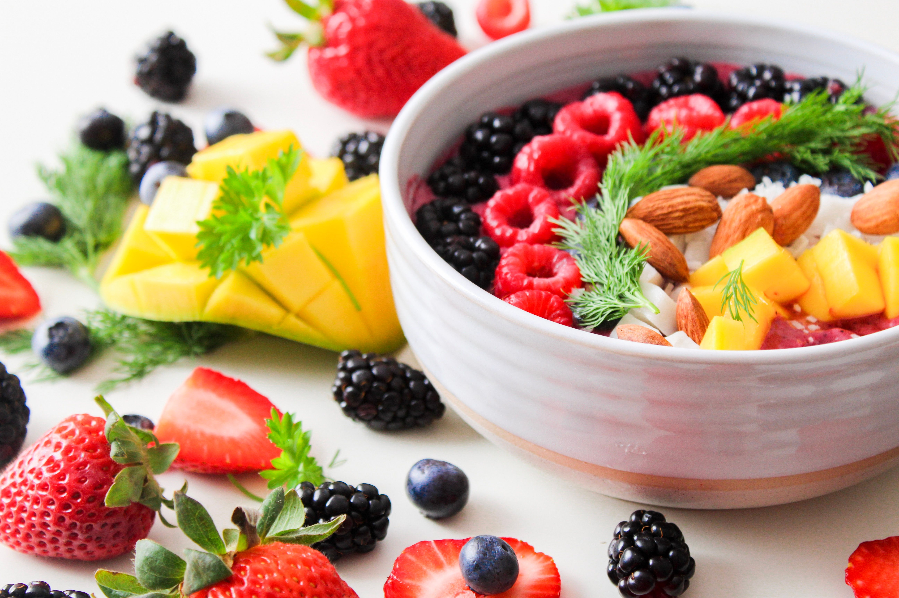
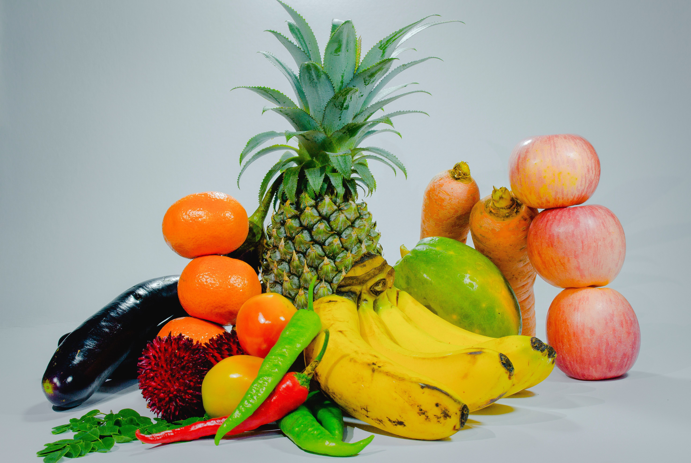
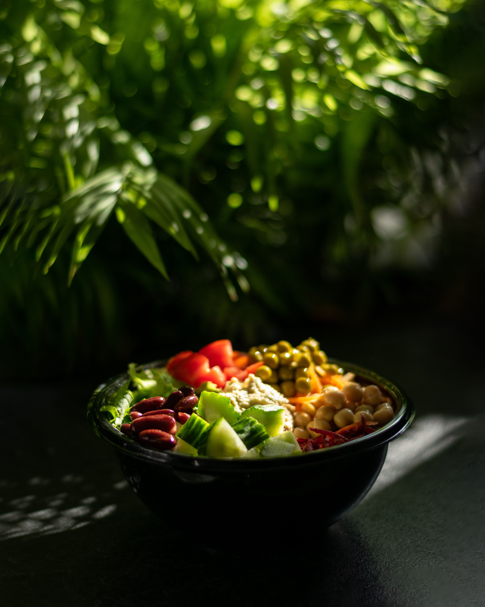
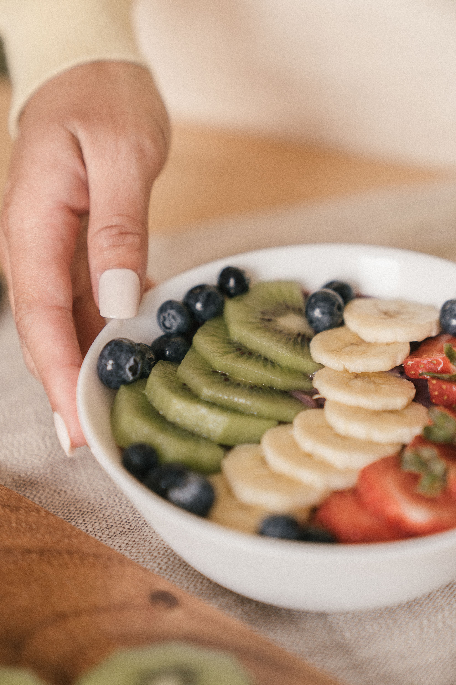
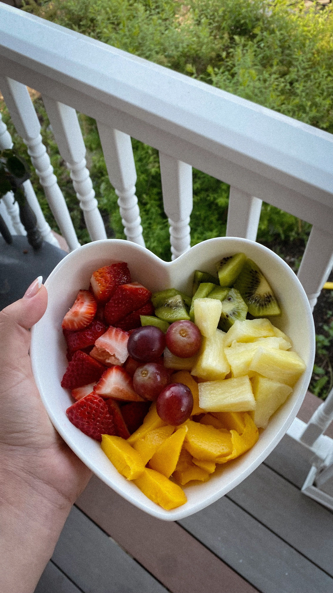
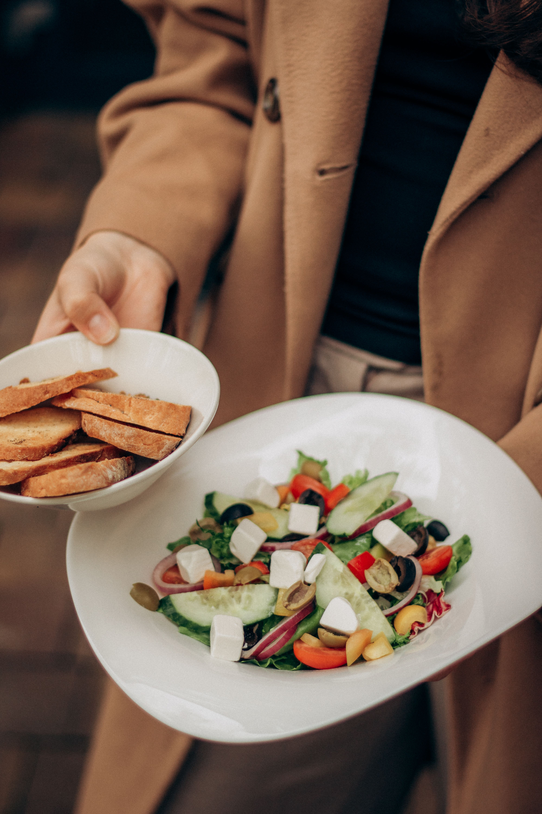

Planeamento alimentar que acompanha o seu ritmo clínico
Fichas de paciente, planos semanais com cálculo automático de macros, antropometria completa e relatórios — tudo num só lugar, sincronizado e seguro.

Tudo o que precisa numa consulta
Construído à volta do fluxo de trabalho real de uma consulta de nutrição — não é uma app de contagem de calorias adaptada.


Conceção clínica, não genérica
Equivalências alimentares algorítmicas, antropometria ISAK completa e classificação IMC automática — construído para a prática real de um nutricionista, não adaptado de uma app de contagem de calorias.

A sua consulta, em qualquer dispositivo
Trabalhe do computador na clínica ou do telemóvel entre consultas — os dados dos seus pacientes sincronizam automaticamente, com acesso protegido por autenticação e isolamento total entre contas.
Da primeira consulta ao acompanhamento contínuo




Pronto para simplificar a sua prática clínica?
Junte-se a nutricionistas que já trocaram folhas soltas e ficheiros dispersos por um único lugar organizado.